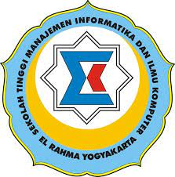

 SELAMAT DATANG DI SITUS STMIK EL RAHMA
STMIK El Rahma Yogyakarta berdiri pada tanggal 30 Agustus 2001 dengan SK Mendiknas No. 155/D/0/2001 dibawah naungan Yayasan El Rahma. Pada saat berdirinya, STMIK El Rahma memiliki lima program studi yaitu Sistem Informasi, Teknik Informatika, Manajemen Informatika, Teknik Komputer dan Komputerisasi Akuntansi.